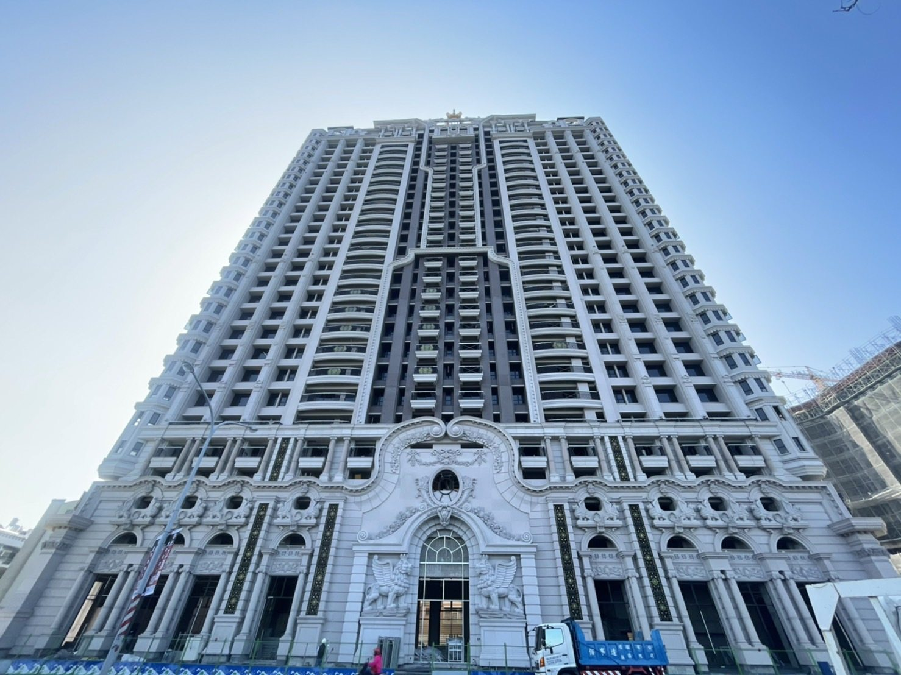
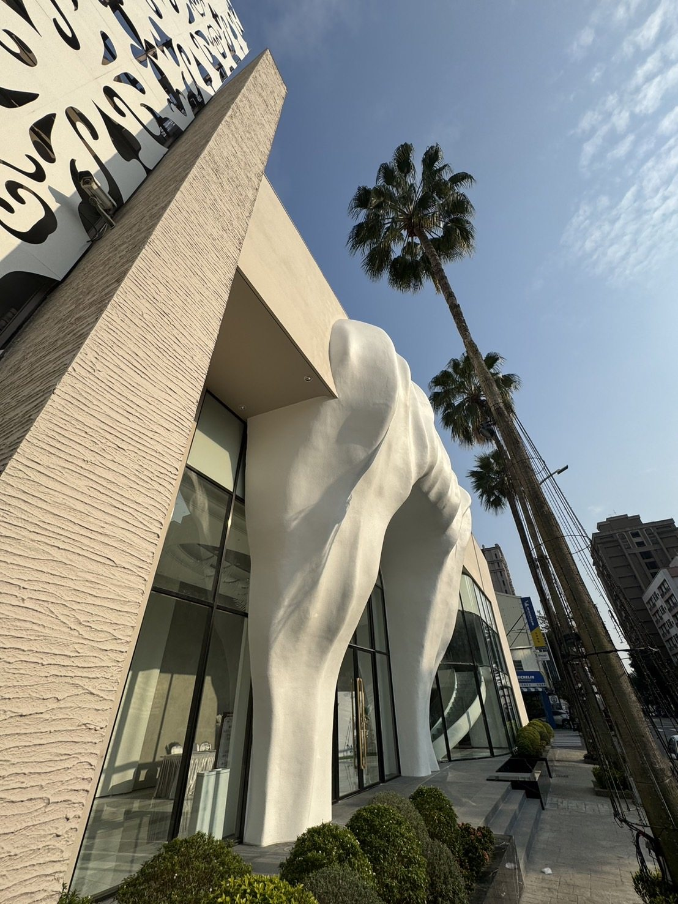
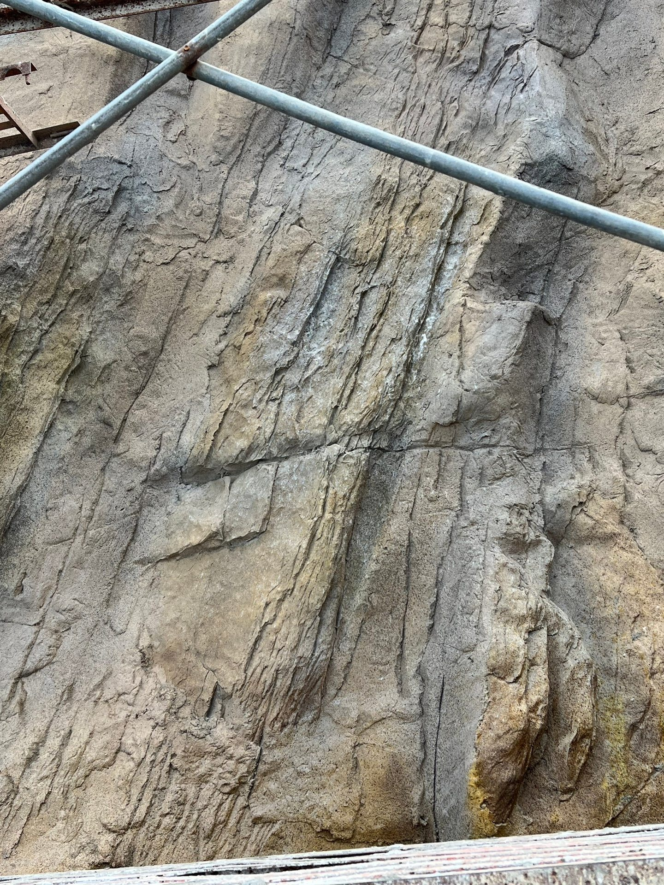

01 認識 PPG：塗料與塗層技術的長期累積
PPG 創立於 1883 年（前身為匹茲堡平板玻璃公司），總部位於美國賓州，百年來跨足航太防護、工業防蝕、汽車原廠烤漆與建築高階塗料等極限環境應用。對於建築專案而言，品牌的百年研發實力能提供強大的技術信心；但在工程實務上，選用產品仍必須回歸具體型號的測試數據、認證標準與基材相容性進行評估。
百年研發基底
橫跨航太、汽車原廠與全球指標性摩天大樓塗層，將極限抗候科技導入建築常態防護。
全球營運與供應
業務遍及全球多個市場，材料生產具備高度標準化與嚴苛的原物料品管認證體系。
低 VOC 與綠建築導向
全系列水性化環保配方，呼應現代 ESG 低碳建築與健康建材規範，降低環境負荷。
卓越耐候與保色
耐候耐酸雨性能經過嚴格耐人工老化試驗，守護外牆色澤不易粉化褪色。
02 騰煇 × PPG：全球品牌背景，結合在地工程經驗
外牆塗料的成敗，不僅取決於桶子裡的塗料品質，更取決於現場基底的處理工藝。台灣位處亞熱帶，高濕、強烈紫外線、地震頻繁微裂紋以及沿海鹽霧侵蝕，對外牆塗料的彈性、透氣度與附著力提出嚴酷考驗。
騰煇企業深耕台灣工程四十年，堅持以「連工帶料」的一條龍責任施工模式，將 PPG 原廠頂級塗裝系統精確落實在每一棟建築立面上：
- 依據建築微氣候精準選材 不論是高雄沿海重工業區的耐候抗酸需求、中部高溫多日照的抗紫外線保色，或是北部多雨山區的防霉透氣，皆量身推薦最合適的塗料品類。
- 嚴格的底層基面處理工法 徹底落實高壓水刀除污、裂縫專用彈性抗裂網填補、底漆高滲透加固，確保塗料與結構體形成分子級的牢固抓結力。
- 標準化多道噴塗厚度管制 杜絕偷工減料，嚴格依照 PPG 原廠技術規範掌控每一道塗層的膜厚（DFT）與間隔乾燥時間，發揮塗料的完整設計壽命。
03 五項嚴選塗裝產品與應用特色
不同建築立面對表面質感、抗微裂紋、透氣防滲或仿石紋理的需求各異。以下為騰煇官方嚴選並長期施作之五項主力 PPG 建築外牆系統：
彈性佩能漆 ／ PainTex Coating
高性能彈性外牆專用塗裝系統，專為克服台灣地震熱脹冷縮引起的微細裂紋而設計。
- 超高彈性裂縫延伸率：能優雅跨越基底 0.3mm–0.5mm 內的細微動態裂縫，避免雨水順著毛細孔滲入牆體。
- 雙向呼吸透氣防滲：緊密分子膜阻隔外部液態水滲透，同時允許牆體內部水氣自然蒸發逸散，徹底杜絕外牆起泡與剝落。
- 高耐候抗髒污自潔性：特殊交聯技術形成緻密漆面，大幅降低大氣灰塵與油煙吸附，經雨水沖刷自然潔淨。
絢岩岩彩漆 ／ Granite Coating
極致還原高檔花崗岩晶片立體質感的液態花崗岩複合塗料，為大樓立面塑造豪宅般的大器風範。
- 真石級立體晶片質感：單桶內含多色懸浮岩片複合粒子，透過專業噴槍一次噴塗即可呈現逼真花崗岩自然斑駁紋理。
- 結構極致輕量化：重量僅有天然石材的 1/20 至 1/30，免除沈重鋼架固定結構，大幅提升建築耐震安全係數。
- 彈性曲面客製能力：完全突破真石材無法施作雙曲面之瓶頸，可完美包覆 GRC 圓弧造型拱門、柱頭與複雜凹凸線條。
龐亞漆 ／ Panya Coating
專業後製清水模塗料系統，在一般水泥、矽酸鈣板或 GRC 基面上重現安藤忠雄風格的純粹素顏混凝土美感。
- 超強附著拉拔強度：實測附著力高達 1.4 MPa（顯著優於一般普通外牆水性塗料），緊密黏結基底不脫落。
- 10 奈米級微晶耐污乳液：採用極微細奈米乳液聚合物，漆膜平滑細膩，具備極強的防塵、耐水斑與抗風化能力。
- 灰階調色客製化：可依建築師品味自由調配淺灰、水泥中灰、炭冷灰等細膩色階，並施作清水模螺栓孔與分模線細部。
臻石漆 ／ Real Stone Coating
採用天然彩色天然礦石碎晶作為骨材之厚漿型立面塗料，賦予建築厚重沉穩的自然礦石觸感。
- 天然彩色天然礦石顆粒：全數精選天然彩色礦砂碎粉，非市售普通化學染色砂，長年烈日曝曬依然保色不黃變。
- 柔韌抗裂緩衝層：特製柔韌基底乳膠包覆天然石砂，具備吸收基材輕微熱脹冷縮之緩衝韌性，改善一般石漆龜裂宿命。
- 耐磨耐刮物理強度高：厚質塗膜固化後具備如天然岩石般的堅硬防護力，特別適合建築基座、外牆柱腳等人流頻繁接觸面。
雅飾彈性 500 ／ Elastic 500
專為大型建案與老屋外牆翻新設計之長效耐久高彈性保色外牆塗料，兼顧優異施工性與長壽命經濟效益。
- 全天候低溫回彈性：在寒流低溫或盛夏暴曬下依然維持漆膜柔軟韌性，有效遮蔽牆體龜裂並保護鋼筋不鏽蝕。
- 優異抗紫外線與抗粉化：高耐候壓克力複合樹脂，耐戶外紫外線照射老化，經久不粉化、不泛白，保持立面歷久如新。
- 翻新拉皮適配性極佳：具備極佳的遮蓋力與基底相容性，極為適合大型集合住宅、廠辦及透天老屋的外牆免拆拉皮更新工程。
04 從北到南，看見塗料與立面的多元工程應用
塗裝的效果會隨基材形式、造型曲度、光影折射與施工技法呈現豐富的面貌。以下為騰煇團隊在全台灣執行的代表性實績現場照：






05 延伸觀看：塗料應用與工程實錄
除了圖文解說，透過動態短影音能更直觀感受立面塗層的光澤質地與施工細部。歡迎延伸觀賞騰煇官方工程短片：
官方工程影音精選
直擊外牆施工放樣、GRC 吊掛組裝與高耐候噴塗工藝的現場動態細節：
FAQ PPG 建築塗料常見問題
Q1: 這五項嚴選塗裝產品可以隨意互相替代嗎？
不建議隨意替代。每項產品的設計初衷截然不同：例如「彈性佩能漆」重在伸長率以防細微裂紋漏水，「絢岩岩彩漆」專精於大樓豪宅外觀的花崗岩質感，而「龐亞漆」則專門呈現素顏清水模的工藝質感。應依建築所在位置的受候條件、立面造型美學與業主預算綜合評估。
Q2: 騰煇如何確保現場施工品質符合 PPG 原廠標準？
騰煇堅持「連工帶料」模式，自家具備受過原廠專業技術培訓的施工班底，嚴格把關每一道底漆、中塗與面漆的稀釋比例、噴塗膜厚與道數，絕不偷工減料，並可依合約開立完整的原廠材料出廠證明與工程保固書。
Q3: PPG 品牌背景是否代表所有產品皆具備相同的國際認證？
不是。品牌背景、ISO 企業管理系統認證與個別塗料型號的送檢報告（如耐燃一級、抗拉伸率、耐洗刷性、防霉抗菌等）屬於不同檢驗層次。專案設計與送審時，騰煇工程顧問會針對具體選定型號提供對應之第三方公正檢驗報告。
為您的建築立面，選定最合適的 PPG 塗裝防護體系
騰煇企業具備四十年立面工程落地實力，提供 1:1 實體材質樣板製作、現場基底勘測與連工帶料完整規劃。歡迎隨時與我們聯繫討論。
預約 PPG 樣板與工程諮詢 →